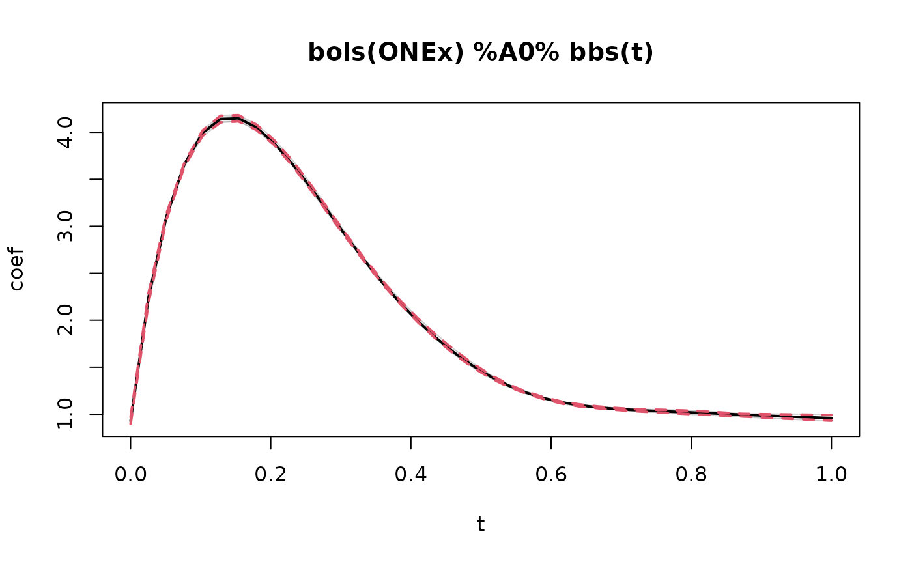
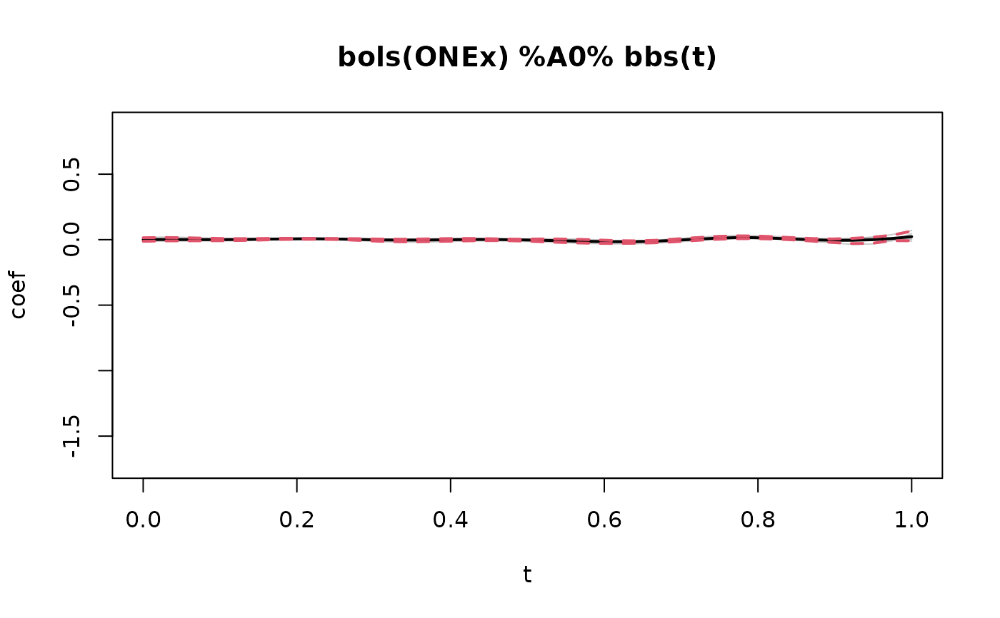
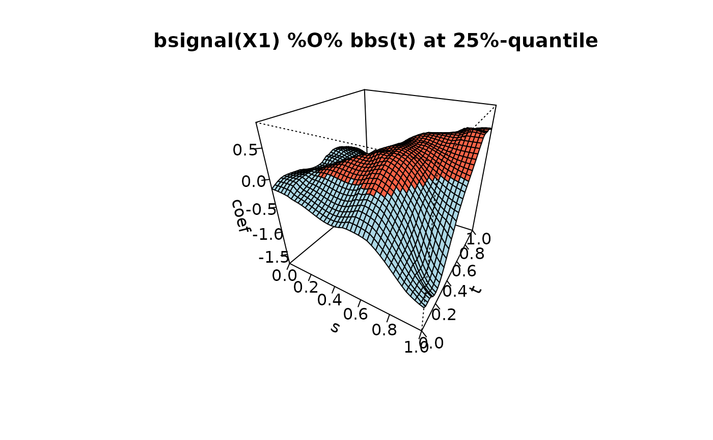
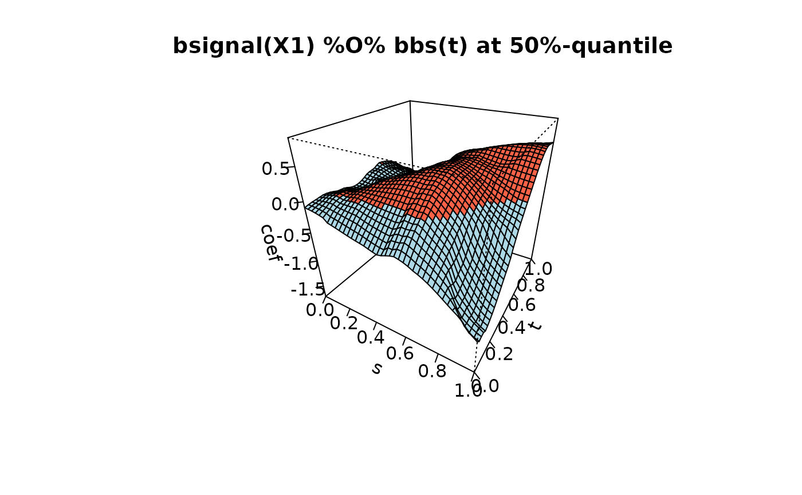
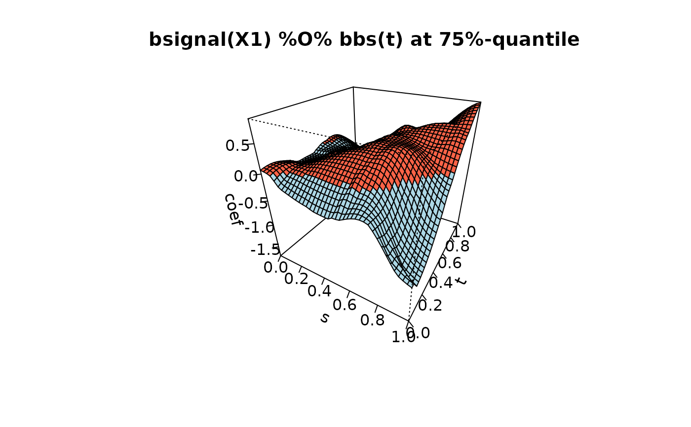

The model is fitted on bootstrapped samples of the data to compute bootstrapped coefficient estimates. To determine the optimal stopping iteration an inner bootstrap is run within each bootstrap fold. As estimation by boosting shrinks the coefficient estimates towards zero, to bootstrap confidence intervals are biased towards zero.
Arguments
- object
a fitted model object of class
FDboost, for which the confidence intervals should be computed.- which
a subset of base-learners to take into account for computing confidence intervals.
- resampling_fun_outer
function for the outer resampling procedure.
resampling_fun_outermust be a function with argumentsobjectandfun, whereobjectcorresponds to the fittedFDboostobject andfunis passed to thefunargument of the resampling function (see examples). IfNULL,applyFoldsis used with 100-fold boostrap. Further arguments toapplyFoldscan be passed via.... Although the function can be defined very flexible, it is recommended to useapplyFoldsand, in particular, notcvrisk, as in this case, weights of the inner and outer fold will interact, probably causing the inner resampling to crash. For bootstrapped confidence intervals the outer function should usually be a bootstrap type of resampling.- resampling_fun_inner
function for the inner resampling procudure, which determines the optimal stopping iteration in each fold of the outer resampling procedure. Should be a function with one argument
objectfor the fittedFDboostobject. IfNULL,cvriskis used with 25-fold bootstrap.- B_outer
Number of resampling folds in the outer loop. Argument is overwritten, when a custom
resampling_fun_outeris supplied.- B_inner
Number of resampling folds in the inner loop. Argument is overwritten, when a custom
resampling_fun_inneris supplied.- type_inner
character argument for specifying the cross-validation method for the inner resampling level. Default is
"bootstrap". Currently bootstrap, k-fold cross-validation and subsampling are implemented.- levels
the confidence levels required. If NULL, the raw results are returned.
- verbose
if
TRUE, information will be printed in the console- ...
further arguments passed to
applyFoldsif the default forresampling_fun_outeris used
Value
A list containing the elements raw_results, the
quantiles and mstops.
In raw_results and quantiles, each baselearner
selected with which in turn corresponds to a list
element. The quantiles are given as vector, matrix or list of
matrices depending on the nature of the effect. In case of functional
effects the list element inquantiles is a length(levels) times
length(effect) matrix, i.e. the rows correspond to the quantiles.
In case of coefficient surfaces, quantiles comprises a list of matrices,
where each list element corresponds to a quantile.
Note
Note that parallelization can be achieved by defining
the resampling_fun_outer or _inner accordingly.
See, e.g., cvrisk on how to parallelize resampling
functions or the examples below. Also note that by defining
a custum inner or outer resampling function the respective
argument B_inner or B_outer is ignored.
For models with complex baselearners, e.g., created by combining
several baselearners with the Kronecker or row-wise tensor product,
it is also recommended to use levels = NULL in order to
let the function return the raw results and then manually compute
confidence intervals.
If a baselearner is not selected in any fold, the function
treats its effect as constantly zero.
Examples
if(require(refund)){
#########
# model with linear functional effect, use bsignal()
# Y(t) = f(t) + \int X1(s)\beta(s,t)ds + eps
set.seed(2121)
data1 <- suppressWarnings(pffrSim(scenario = "ff", n = 40))
data1$X1 <- scale(data1$X1, scale = FALSE)
dat_list <- as.list(data1)
dat_list$t <- attr(data1, "yindex")
dat_list$s <- attr(data1, "xindex")
## model fit by FDboost
m1 <- FDboost(Y ~ 1 + bsignal(x = X1, s = s, knots = 8, df = 3),
timeformula = ~ bbs(t, knots = 8), data = dat_list)
}
#> Use a smooth offset.
# \donttest{
# a short toy example with to few folds
# and up to 200 boosting iterations
bootCIs <- bootstrapCI(m1[200], B_inner = 2, B_outer = 5)
#> Start computing bootstrap confidence intervals...
#> ..........
# look at stopping iterations
bootCIs$mstops
#> [1] 71 200 200 43 40
# plot bootstrapped coefficient estimates
plot(bootCIs, ask = FALSE)





# }
my_inner_fun <- function(object){
cvrisk(object, folds = cvLong(id = object$id, weights =
model.weights(object), B = 2) # 10-fold for inner resampling
)
}
# \donttest{
bootCIs <- bootstrapCI(m1, resampling_fun_inner = my_inner_fun,
B_outer = 5) # small B_outer to speed up
#> B_inner is ignored as resampling_fun_inner is not NULL.
#> Start computing bootstrap confidence intervals...
#>
# }
## We can also use the ... argument to parallelize the applyFolds
## function in the outer resampling
# \donttest{
bootCIs <- bootstrapCI(m1, B_inner = 5, B_outer = 3)
#> Start computing bootstrap confidence intervals...
#> ...............
# }
## Now let's parallelize the outer resampling and use
## crossvalidation instead of bootstrap for the inner resampling
my_inner_fun <- function(object){
cvrisk(object, folds = cvLong(id = object$id, weights =
model.weights(object), type = "kfold", # use CV
B = 5, # 5-fold for inner resampling
)) # use five cores
}
# use applyFolds for outer function to avoid messing up weights
my_outer_fun <- function(object, fun){
applyFolds(object = object,
folds = cv(rep(1, length(unique(object$id))),
type = "bootstrap", B = 10), fun = fun) # parallelize on 10 cores
}
# \donttest{
bootCIs <- bootstrapCI(m1, resampling_fun_inner = my_inner_fun,
resampling_fun_outer = my_outer_fun,
B_inner = 5, B_outer = 10)
#> B_outer is ignored as resampling_fun_outer is not NULL.
#> B_inner is ignored as resampling_fun_inner is not NULL.
#> Start computing bootstrap confidence intervals...
#>
# }
######## Example for scalar-on-function-regression with bsignal()
data("fuelSubset", package = "FDboost")
## center the functional covariates per observed wavelength
fuelSubset$UVVIS <- scale(fuelSubset$UVVIS, scale = FALSE)
fuelSubset$NIR <- scale(fuelSubset$NIR, scale = FALSE)
## to make mboost:::df2lambda() happy (all design matrix entries < 10)
## reduce range of argvals to [0,1] to get smaller integration weights
fuelSubset$uvvis.lambda <- with(fuelSubset, (uvvis.lambda - min(uvvis.lambda)) /
(max(uvvis.lambda) - min(uvvis.lambda) ))
fuelSubset$nir.lambda <- with(fuelSubset, (nir.lambda - min(nir.lambda)) /
(max(nir.lambda) - min(nir.lambda) ))
## model fit with scalar response and two functional linear effects
## include no intercept as all base-learners are centered around 0
mod2 <- FDboost(heatan ~ bsignal(UVVIS, uvvis.lambda, knots = 40, df = 4, check.ident = FALSE)
+ bsignal(NIR, nir.lambda, knots = 40, df=4, check.ident = FALSE),
timeformula = NULL, data = fuelSubset)
# \donttest{
# takes some time, because of defaults: B_outer = 100, B_inner = 25
bootCIs <- bootstrapCI(mod2, B_outer = 10, B_inner = 5)
#> Start computing bootstrap confidence intervals...
#>
# in practice, rather set B_outer = 1000
# }